농작업안전보건기사 (2021-09-12 기출문제)
1과목: 농작업과 안전보건교육
1. 농업기계화 촉진법령상 안전교육에 관한 사항으로 옳은 것은?
- 안전교육은 농업기계의 구조 및 조작취급성에 대해 교육을 받는다.
- 안전교육 기간은 농기계의 종류에 따라 5일 이내의 범위에서 교육을 받는다.
- 농업용 트랙터 등 농업용 기계를 사용하려는 농업인은 안전교육 대상자가 아니다.
- 농립축산식품부장관은 농업기계의 안전사고 예방을 위하여 안전교육계획을 2년마다 수립하고 시행하여야 한다.
(정답률: 알수없음)

2. 외국의 농작업 안전보건제도에 관한 사항 중 틀린 것은?
- 아일랜드는 민간보험회사에서 임의가입형태로 농업인 산업재해보험을 운영하고 있으나 한국과 달리 가입률이 매우 높다.
- 오스트리아는 자영농업인을 포함한 모든 농업인을 대상으로 재해보험 가입과 예방활동을 의무화하고 있다.
- 독일의 경우 농가 단위로 재해보험 가입이 의무화되어 있으나, 농가 경영주에게 해당 농장의 재해 예방 조치 의무는 없다.
- 핀란드는 국립농업안전보건센터가 농업안전보건전문가의 교육과 양성, 지역현장에서의 안전과 보건의 제반 영역을 포함한 농업보건 서비스를 제공한다.
(정답률: 알수없음)
3. 농어업인 삶의 질 향상 및 농어촌지역 개발촉진에 관한 특례법령상 농어업의 작업환경 및 작업특성에 대한 지원 사업이 아닌 것은? (단, 예산의 범위에서 진행하는 지원사업이다.)
- 농어촌 자연환경 개선을 위한 기술 보급
- 농어업 작업 안전보건기술의 개발 및 보급
- 농어업 작업환경을 개선할 수 있는 장비의 개발 및 보급
- 농어업인에게 주로 발생하는 질환 및 재해예방교육의 실시
(정답률: 알수없음)
4. 농업인 업무상 재해가 발생할 때마다 비가역적인 인적, 경제적 손실을 일으키는 특성을 고려할 때 가장 선행되어야 하는 요소는?
- 감시
- 예방
- 보상
- 재활
(정답률: 알수없음)
5. 농어업인의 안전보험 및 안전재해예방에 관한 법률상 ( )에 알맞은 용어는?
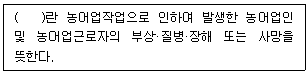
- 농부증
- 농업인 질환
- 농작업 사고
- 농어업작업안전재해
(정답률: 알수없음)
6. 농어업인 삶의 질 향상 및 농어촌지역 개발촉진에 관한 특례법령상 명시된 농어업 작업자 건강위해 요소의 측정대상이 아닌 것은? (단, 그 밖에 농림축산식품부장관 또는 해양수산부장관이 정하는 사항은 제외한다.)
- 농약, 독성가스 등 화학적 요인
- 소음, 진동, 온열 환경 등 물리적 요인
- 열, 에너지, 방사선 등 기타 에너지 요인
- 유해미생물과 그 생성물질 등 생물적 요인
(정답률: 알수없음)
7. 농약관리법령상 ( )에 알맞은 용어는?
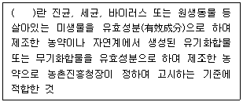
- 원제(原劑)
- 천연식물보호제
- 방제제
- 농약활용기자재
(정답률: 알수없음)
8. 농업기계 검정기준상 공통안전기준 중 가동부의 방호 기준에 관한 사항으로 ( )에 알맞은 내용은?
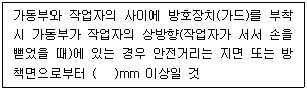
- 1000
- 1500
- 2000
- 2500
(정답률: 알수없음)
9. 신규농업인에게 짧은 시간 동안 많은 양의 사실적, 기본적 정보 개념을 전달할 때 사용되는 안전교육 기법은?
- 시범
- 토의법
- 강의법
- 사례연구
(정답률: 알수없음)
10. 농작업으로 인한 유해요인으로 틀린 것은?
- 양계작업 - 이산화탄소
- 시설하우스 작업 - 더위
- 노지고추 방제작업 - 농약
- 콤바인 벼 수확작업 – 곡물분진
(정답률: 알수없음)
11. 교육과정을 통해 얼마나 성장하였는가에 초점을 두는 교육평가 유형은?
- 진단 평가
- 성장 참조 평가
- 능력 참조 평가
- 규준 지향 평가
(정답률: 알수없음)
12. 농업기계화 촉진법령상 농업기계의 검정방법 중 농업기계의 형식에 대한 구조, 성능, 안전성 및 조직의 난이도에 대한 검정은?
- 안전검정
- 변경검정
- 성능검정
- 종합건정
(정답률: 알수없음)
13. 다음에서 설명하는 재해원인의 통계적 분석방법은?
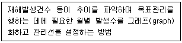
- 관리도
- 특성요인도
- 파레토도
- 클로즈 분석
(정답률: 알수없음)
14. 농작업 보건교육에 관한 설명으로 옳은 것은?
- 학습자를 존중하고 도와주는 개념으로 보건교육이 진화되고 있다.
- 보건교육을 통해 질병을 사전에 예방할 수 없다.
- 보건교육의 패러다임이 건강 중심에서 질병 중심으로 변화하였다.
- 일반인 중심의 보건교육에서 전문가 중심의 보건교육으로 변화하였다.
(정답률: 알수없음)
15. 농약관리법령상 농약등 또는 원제의 표시사항이 아닌 것은?
- 포장단위
- 제품의 제조공정
- 유효성분의 일반명 및 함유량
- 농약제품의 균일성이 인정되도록 구성한 모집단의 일련번호
(정답률: 알수없음)
16. 다음에서 사용된 교육 평가 모형은?
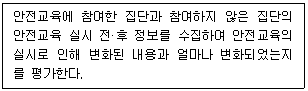
- 사후 조사 평가모형
- 사전사후 조사 평가모형
- 대조군 사전 조사 평가모형
- 실험군 및 대조군 사전사후 조사 평가모형
(정답률: 알수없음)
17. 농작업 안전보건 집단교육 시 유의사항으로 틀린 것은?
- 평가에 교수자 뿐 아니라 학습자도 참여시키는 것이 바람직하다.
- 교육 대상자 수는 15명~20명 정도가 효과적이며 대상자가 많을 경우 50명 내외로 한다.
- 교육 대상자들이 서로 다른 성격과 문제를 가지는 집단으로 구성되어야 교육의 효과가 높다.
- 교육방법은 교수자와 교육 대상자가 함께 학습할 수 있는 방법으로 운영되는 것이 효과적이다.
(정답률: 알수없음)
18. 농어업인의 안전보험 및 안전재해예방에 관한 법률상 보험에서 피보험자의 농어업작업안전 재해에 대하여 지급하는 보험금의 종류가 아닌 것은? (단, 그 밖에 대통령령으로 정하는 급여금은 제외한다.)
- 장해급여금
- 행방불명급여금
- 상병(傷病)보상연금
- 상해·질병 치료급여금
(정답률: 알수없음)
19. 농업인의 건강관리에 관한 사항으로 틀린 것은?
- 곡물 분진, 인간공학적 유해요인 등 위험인자들이 다양하다.
- 농약중독이나 사고로 인한 손상이나 사망이 높은 것으로 보고되고 있다.
- 각종 농기계의 사용에 따른 소음, 진동 등과 같은 위험요인에 노출될 위험이 크다.
- 농작업 중 노출되는 위험요인과 실제 질병을 일으키는 인자들은 단순하고 간단하다.
(정답률: 알수없음)
20. 농작업 안전보건 교육프로그램 개발을 위한 ADDIE 모형의 절차로 ( )에 알맞은 내용은?
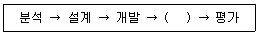
- 관찰
- 연구
- 수정
- 실행
(정답률: 알수없음)
2과목: 농작업 안전관리
21. 과수원 등에서 이동식 사다리를 이용하여 작업할 때 떨어짐 사고 예방을 위한 조치로 틀린 것은?
- 사다리의 상부 3개 발판 미만에서 작업한다.
- 경사면 작업 시 경사면을 위로 보고 작업한다.
- 두 손, 두 발 중 3점을 사다리에 접촉 유지한 상태로 작업한다.
- 사다리에서 자재, 설비 등 15kg 이상의 중량물을 운반한다.
(정답률: 알수없음)
22. 다음에서 설명하는 안전보건표지는?
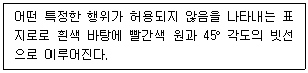
- 금지표지
- 경고표지
- 지시표지
- 안내표지
(정답률: 알수없음)
23. 산업안전보건법령상 산소결핍의 산소농도 기준은?
- 10%미만
- 18%미만
- 28%미만
- 30%미만
(정답률: 알수없음)
24. 산업안전보건법령상 안전보건표지의 색채와 사용례가 잘못 연결된 것은?
- 노란색 : 응급 조치 강조 표시
- 녹색 : 비상구 및 피난소 안내 표시
- 빨간색 : 소화설비 및 그 장소 표시
- 파란색 : 특정 행위의 지시 및 사실의 고지 표지
(정답률: 알수없음)
25. 동력예취기 작업 시 안전수칙으로 틀린 것은?
- 반드시 두 손으로 작업하고 칼날을 지면에서 50cm 이상 이격시킨다.
- 작업할 곳에 빈병이나, 돌 등 위험요인을 확인한다.
- 안전모, 보호안경, 무릎보호대, 안전화 등 보호구를 착용한다.
- 운전 중 항상 기계의 작업범위 15m 내에 사람이 접근하지 못하게 한다.
(정답률: 알수없음)
26. 농산물 세척 시 사용하는 컨베이어의 방호장치로 거리가 가장 먼 것은?
- 덮개
- 건널다리
- 시건장치
- 비상정지장치
(정답률: 알수없음)
27. 방제복, 방제마스크, 고무장갑 등의 보호장구를 착용하고 반드시 바람을 등지고 작업해야 하는 농업기계는?
- 연무기
- 비닐 피복기
- 농업용 난방기
- 사료작물 수확기
(정답률: 알수없음)
28. 농산물 선별기를 이용한 작업의 안전수칙으로 옳은 것은?
- 누전에 의한 사고 방지를 위한 접지 단자를 이용하여 접지한다.
- 벽면에 설치할 때는 벽에 붙여서 고정시키도록 한다.
- 가동 중 기계 수리 시 면장갑을 착용 후 수리한다.
- 수평조절 나사를 돌려 선별기를 기울어지게 한다.
(정답률: 알수없음)
29. 쟁기의 안전이용 지침으로 틀린 것은?
- 안전볼트 교체 시에는 쟁기를 지면에 내려놓고 교환한다.
- 안전판과 쟁기 다리 사이에 손이 끼이지 않도록 한다.
- 쟁기를 부착하고 주행할 경우 급가속하면 트랙터 앞부분이 들릴 수 있으므로 주의한다.
- 트랙터에 정착된 상태로 점검 및 정비할 경우 반드시 유압을 들어 올려 쟁기 아래에 들어가서 정비한다.
(정답률: 알수없음)
30. 하비(J.H. Harvey)의 재해 방지 대책 3E에 해당하지 않는 것은?
- Education(교육적 대책)
- Engineering(기술적 대책)
- Enforcement(규제적 대책)
- Environment(환경적 대책)
(정답률: 알수없음)
31. 넘어짐 사고의 예방대책으로 틀린 것은?
- 어두운 공간에는 충분한 조명을 설치한다.
- 미끄럼 위험이 있는 바닥은 마찰력을 높이는 조치를 한다.
- 호스 등을 사용할 경우 바닥 위로 호스가 팽팽하게 당겨져 있도록 한다.
- 하지근육피로 등을 초래할 수 있는 장시간 노동을 하지 않도록 한다.
(정답률: 알수없음)
32. 농업기계의 안전이용을 위한 수칙 중 수행 주체가 다른 것은?
- 안전의식을 갖고 작업에 임하도록 노력한다.
- 농업용 기계의 적정한 조작을 위해 노력한다.
- 도로교통법 등 관계법령을 숙지하도록 노력한다.
- 농업기계의 안전사고 예방을 위하여 안전교육계획을 매년 수립하고 시행하여야 한다.
(정답률: 알수없음)
33. 트랙터 작업 시 안전수칙으로 틀린 것은?
- 요철이 심한 노면을 주행할 때는 속도를 낮춘다.
- 작업기를 점검 정비할 때에는 작업기를 하강한 상태로 하는 것이 원칙이다.
- 배속턴 등 전륜증소긱구는 고속 주행 시 또는 경사지에서 선회할 때 사용한다.
- 좌우 독립브레이트를 부착한 트랙터는 주행하거나 언덕을 넘을 때 좌우의 브레이크 페달을 연겨랗여 일체로 작동하도록 한다.
(정답률: 알수없음)
34. 동력 경운기 및 관리기 등을 보관할 때 주의해야 할 사항으로 옳은 것은?
- 경사진 곳에 보관한다.
- 작업기는 내려놓은 상태로 보관한다.
- 열쇠를 잃어버릴 우려가 있으므로 열쇠를 꽂아놓는다.
- 트레일러 보관 시 기체를 안정시키기 위한 스탠드가 있는 경우라도 사용하지 않는다.
(정답률: 알수없음)
35. 재해조사에 관한 설명으로 틀린 것은?
- 재해 조사 시 피해자, 목격자 등 많은 사람들에게 사고 시의 상황을 듣는다.
- 재해를 발생시킨 원인을 규명하고 재발 방지대책을 강구하는데 목적이 있다.
- 재해 발생에 책임이 있는 사람을 문책하기 위해 실시한다.
- 동종사고 및 유사사고의 재발 방지에 도움이 되는 자료 수집이 이루어져야 한다.
(정답률: 알수없음)
36. 농업기계 교통안전 수칙으로 틀린 것은?
- 교차로 진출입 시 충분한 시야를 확보한다.
- 도로교통법상의 안전수칙을 잘 지켜야 한다.
- 음주 운전은 하지 않고 방어운전을 습관화한다.
- 주정차를 할 때에는 가급적 차량의 왕래가 빈번한 도로변에 해야 한다.
(정답률: 알수없음)
37. 다음 ( )에 알맞은 내용은?
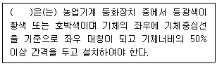
- 경고등
- 전조등
- 제동등
- 방향지시등
(정답률: 알수없음)
38. 재해 발생 시 조치순서로 옳은 것은?
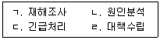
- ㄱ → ㄴ → ㄹ → ㄷ
- ㄱ → ㄹ → ㄴ → ㄷ
- ㄷ → ㄱ → ㄴ → ㄹ
- ㄹ → ㄴ → ㄷ → ㄱ
(정답률: 알수없음)
39. 돼지의 이동 및 출하작업에서 작업자의 안전을 확보하기 위한 대책으로 틀린 것은?
- 돼지의 이동통로에는 발조심 등의 경고표시를 한다.
- 급하게 돼지를 몰지 않도록 작업자에게 충분한 시간을 준다.
- 돼지에게 밟히면 위험하므로 고무장화를 신어야 한다.
- 돼지를 이동시키는 몰이판은 작업자 허리 높이 이상 올라가는 것이 좋다.
(정답률: 알수없음)
40. 안전점검을 점검방법에 따라 구분할 때 방호장치나 누전차단장치 등을 정해진 순서에 따라 작동시키면서 작동여부를 확인하는 안전점검의 명칭은?
- 외관점검
- 작동점검
- 종합점검
- 일반점검
(정답률: 알수없음)
3과목: 농작업 보건관리
41. 다음에서 설명하는 질환은?
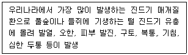
- 쯔쯔가무시증
- 렙토스피라증
- 신증후군출혈열
- 중증열성혈소판감소증후군
(정답률: 알수없음)
42. 농약 노출의 특성이 아닌 것은?
- 농작업 시 농약 노출은 노출 형태가 다양하다.
- 농업인 간 같은 작목을 재배 시 농약 노출 시간은 동일하다.
- 농약 노출 작업은 연간 일정하게 계속되는 것이 아니라 며칠 또는 몇 달에 걸쳐 집중적으로 이루어진다.
- 농업인과 그 가족은 농촌 지역에 거주하는 경우가 많으므로 직업적 노출 외에도 환경적 노출이 발생할 가능성이 크다.
(정답률: 알수없음)
43. 다음에서 설명하는 질환은?
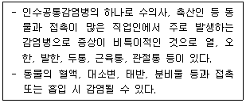
- 신종 독감
- 브루셀라증
- 쯔쯔가무시증
- 렙토스피라증
(정답률: 알수없음)
44. 농업인의 소음성 난청 관리 방안으로 틀린 것은?
- 작업장 내에 흡음재를 설치한다.
- 소음에 대한 노출시간을 단축시킨다.
- 개인보호구를 착용하는 것이 가장 효과적이다.
- 소음이 발생되는 농기계를 격리 도는 밀폐시킨다.
(정답률: 알수없음)
45. 하우스 등과 같이 밀폐된 공간에서 동력기기를 사용하는 작업, 로터리 작업, 농약 방제작업, 각종 트랙터 작업 등 농업용 기계를 사용하는 작업에서 노출될 수 있는 물질은?
- 석면
- 유리규산
- 석영분진
- 디젤 연소물질
(정답률: 알수없음)
46. 농작업 시 노출될 수 있는 유해요인 중 생물학적 유해인자와 거리가 먼 것은?
- 미생물
- 박테리아
- 곰팡이
- 식물생장조절제
(정답률: 알수없음)
47. 농작업 위험도 평가 결과에 따른 위험요인 관리방향으로 틀린 것은?
- 낮음 – 특별한 조치는 필요없음
- 중간 – 보호구 착용 및 주의에 대한 교육이 필요함
- 높음 – 지속적 관찰이 필요함
- 매우 높음 – 즉각적 조치가 필요함
(정답률: 알수없음)
48. 다음의 작업 사례 중 근골격계질환이 발생할 수 있는 사례를 모두 고른 것은?
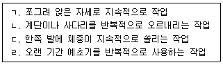
- ㄱ, ㄷ
- ㄱ, ㄴ, ㄹ
- ㄴ, ㄷ, ㄹ
- ㄱ, ㄴ, ㄷ, ㄹ
(정답률: 알수없음)
49. 밀폐공간 작업으로 인한 건강장해 예방을 위한 적정공기 기준에 해당하지 않는 것은?
- 탄소가스 농도 1.5% 미만
- 황화수소 농도 10ppm 미만
- 일산화탄소 농도 50ppm 미만
- 산소 농도 18% 이상 23.5% 미만
(정답률: 알수없음)
50. 다음 설명에 해당하는 온열질환은?
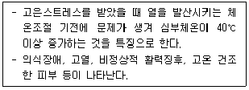
- 열사병(Heat stroke)
- 열탈진(Heat exhaustion)
- 열경련(Heat cramps)
- 열실신(Heat syncope)
(정답률: 알수없음)
51. 농작업에서 가장 많이 노출되는 분진인 유기분진에 해당하는 것은?
- 석면
- 미생물
- 이산화규소
- 디젤 연소물질
(정답률: 알수없음)
52. 농작업 유해요인 노출을 평가하는 방법으로 체크리스트 분석과 비디오 분석을 병행하는 방법을 가장 많이 쓰는 유해인자는?
- 물리적 유해인자
- 화학적 유해인자
- 생물학적 유해인자
- 인간공학적 유해인자
(정답률: 알수없음)
53. 생강 저장용 토굴에서 발생할 수 있는 질식재해를 예방하기 위한 조치로 적절하지 않은 것은?
- 방독마스크를 착용하고 토굴로 들어갔다.
- 들어가기 전 토굴의 산소 농도를 측정했다.
- 송풍기를 이용하여 토굴에 공기를 주입했다.
- 비상시 구조를 위해 입구에 안전삼각대를 설치했다.
(정답률: 알수없음)
54. 진동노출 평가기준 및 방법에 대한 설명으로 틀린 것은?
- 인체 진동 노출을 평가하기 위해서는 3방향(X, Y, Z)을 측정한다.
- 진동 발생 수준은 작업 대상의 노면상태, 작업 내용에 따라 다르다.
- 농작업에서 발생 가능한 요통과 관련되는 국소진동이다.
- 손에 전달되는 진동을 측정하는 경우는 진동이 손으로 전달되는 위치로부터 가까운 곳에서 측정한다.
(정답률: 알수없음)
55. 농업인들에게 빈번하게 발생하는 근골격계질환의 특징이 아닌 것은?
- 반복작업은 근골격계질환 발병에 전혀 영향을 미치지 않는다.
- 증상의 정도가 가볍고 주기적인 것부터 심각하고 만성적인 것까지 다양하다.
- 하나의 조직뿐만 아니라 다른 주변 조직의 변화를 동시에 가져온다.
- 특정된 하나의 신체 부위에 발생할 수 있고 동시에 여러 부위에서 다발적으로 나타날 수도 있다.
(정답률: 알수없음)
56. 근골격계부담작업 평가 도구를 선택할 때 고려하여야 하는 사항이 아닌 것은?
- 작업 특성을 고려하여 선택할 것
- 평가하고자 하는 대상자 수를 고려할 것
- 평가자의 훈련 정도를 고려하여 선택할 것
- 평가하고자 하는 신체 부위를 고려하여 선택할 것
(정답률: 알수없음)
57. 농약 노출 관리방안과 거리가 가장 먼 것은?
- 피부 노출을 최소화 한다.
- 상황에 따라 적절한 마스크를 사용한다.
- 작물의 높이를 고려하여 보호대책을 강구한다.
- 농약을 살포할 때 보호구는 보호 안경만 착요안다.
(정답률: 알수없음)
58. 곡괭이질 또는 삽질 등의 중작업 시 고온 노출기준에 관한 사항으로 ( )에 알맞은 내용은?
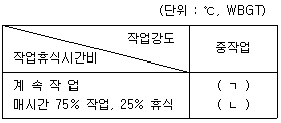
- ㄱ : 25.0, ㄴ : 25.9
- ㄱ : 25.0, ㄴ : 27.9
- ㄱ : 26.7, ㄴ : 25.9
- ㄱ : 26.7, ㄴ : 27.9
(정답률: 알수없음)
59. 감염병 예방 및 관리를 병원소 관리, 전파 과정의 차단, 숙주관리로 구분할 때 숙주관리에 해당하는 것은?
- 격리
- 도축
- 치료
- 예방접종
(정답률: 알수없음)
60. 호흡기계 건강장해를 예방하기 위해 착용하는 호흡용 보호구가 아닌 것은?
- 보안면
- 송기마스크
- 방진마스크
- 방독마스크
(정답률: 알수없음)
4과목: 농작업 안전생활
61. 산업안전보건법령상 전기 기계·기구 등으로 인한 위험 방지 조치가 아닌 것은?
- 충전부가 노출되지 않도록 폐쇄형 외함(外函)이 있는 구조로 할 것
- 충전부에 충분한 절연효과가 있는 방호망이나 절연덮개를 설치할 것
- 충전부는 내구성이 있는 절연물로 주요 작동부분을 제외하고 완전히 덮어 감쌀 것
- 전주 위 및 철탑 위 등 격리되어있는 장소로서 관계자가 아닌 사람이 접근할 우려가 없는 장소에 충전부를 설치할 것
(정답률: 알수없음)
62. 저체온증의 응급처리 방법으로 거리가 가장 먼 것은?
- 의식이 없는 경우 음료를 주지 않는다.
- 신속히 병원으로 가거나 119로 신고한다.
- 겨드랑이나 배 위에 핫팩이나 더운 물통을 올려놓는다.
- 착용중인 옷이 젖었으면 그 위에 담요를 덮어준다.
(정답률: 알수없음)
63. 농작업 시 물체의 낙하 또는 비래에 의한 위험을 방지 또는 경감하고, 머리부위 감전에 의한 위험을 방지하기 위하여 착용하는 안전모의 종류는?
- A
- B
- AE
- ABE
(정답률: 알수없음)
64. 방독마스크의 형태에 포함되지 않는 것은?
- 반면형
- 격리식 개폐형
- 직결식 반면형
- 직결식 전면형
(정답률: 알수없음)
65. 누전차단기 선정 시 주의사항으로 옳은 것은?
- 정격감도전류가 30mA 이상일 것
- 누전차단기의 동작시간은 0.5초 이하일 것
- 누전차단기의 절연저항은 5MΩ 이상일 것
- 정격부동작전류가 정격감도전류의 50% 이하인 것
(정답률: 알수없음)
66. 고령 농업인에게 최근 발생이 증가하고 있는 뇌심혈관계 질환에 대한 설명으로 틀린 것은?(문제 오류로 가답안 발표시 1번으로 발표되었으나 확정답안 발표시 1, 4번이 정답 처리되었습니다. 여기서는 가답안인 1번을 누르면 정답 처리 됩니다.)
- 유전적 요인에 의해서 발생한다.
- 치료와 재활에 재정적 부담이 크다.
- 비만관리도 중요한 질환 예방 대책이다.
- 고혈압, 당뇨병도 뇌심혈관계 질환에 속한다.
(정답률: 알수없음)
67. 저음부터 고음까지 차음하는 귀마개의 종류는?
- EM
- EM-1
- EP-1
- EP-2
(정답률: 알수없음)
68. 최소감지전류에 대한 설명으로 옳은 것은?
- 자력으로 이탈할 수 없는 전류를 말한다.
- 근육마비 및 쇼크와 함께 고통이 따르게 된다.
- 직류를 기준으로 성별 관계없이 동일한 전류의 크기를 가진다.
- 교류인 경우 상용주파수에서 60Hz에서 건강한 성인남자의 경우 1mA정도로 감지한다.
(정답률: 알수없음)
69. 농작업 안전화 및 보호장화를 선정할 때 고려사항으로 거리가 가장 먼 것은?
- 발보다 약간 커야한다.
- 땀이 잘 발산되어야 한다.
- 가볍고 신고 벗기 편해야 한다.
- 미끄러운 곳에서 신발 바닥의 마찰력이 커야 한다.
(정답률: 알수없음)
70. 자외선 과다노출에 의한 인체에 유해한 영향과 거리가 가장 먼 것은?
- 백내장
- 구루병
- 익상편
- 피부 흑색종
(정답률: 알수없음)
71. 농약중독의 응급처치 방법으로 거리가 가장 먼 것은?
- 농약을 마셨을 경우 즉시 병원으로 이송하여 치료 받도록 한다.
- 입에 묻었거나 입안으로 들어간 경우, 깨끗한 물을 마시게 한다.
- 농약이 피부에 묻었을 때 농약이 묻은 피부 부위를 비누를 사용하여 10분 이상 깨끗하게 닦아낸다.
- 농약이 눈에 들어갔을 때 깨끗한 물로 눈을 헹구어 낸 후, 흐르는 물에 적어도 15분 이상 씻어낸다.
(정답률: 알수없음)
72. 감전으로 인한 위험의 크기를 결정짓는 요인으로 옳은 것은?
- 통전 시간, 기계 종류, 전류 크기
- 기계 종류, 통전 경로, 통전 시간
- 전류 크기, 인체 크기, 기계 크기
- 통전 경로, 통전 시간, 전원 종류
(정답률: 알수없음)
73. 스트레스 예방관리의 개인적 관리방안 중 ( )에 알맞은 내용은?
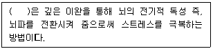
- 명상법
- 인지-행동기법
- 점진적 근육 이완법
- 생체 자기제어 기법
(정답률: 알수없음)
74. 농촌생활에서 식생활 안전을 위해 지켜야 할 사항으로 틀린 것은?
- 손을 자주 씻고 음식을 익혀서 먹는다.
- 도마는 식재료별로 구분하여 사용하고 세척과 건조를 잘하도록 한다.
- 화농성 감염이 있는 환자가 조리하지 않도록 한다.
- 설사, 구토 등의 식중독 증상이 나타나면 구토약이나 설사약을 먹고 몸을 차갑게 한다.
(정답률: 알수없음)
75. 농기계 점검·수리 중 발생한 손가락 절단사고의 응급처치사항으로 틀린 것은?
- 절단부위는 차게 하되 얼리지 않는다.
- 절단 부위는 소독된 마른 거즈나 깨끗한 천으로 감싼다.
- 절단 부위는 거즈 등 청결한 천으로 압박 지혈하고 심장보다 높게 올린다.
- 절단된 부위에 묻은 이물질은 흐르는 물에 손으로 살살 문질러 제거한다.
(정답률: 알수없음)
76. 농업인들이 일반적으로 겪는 스트레스의 요인을 모두 고른 것은?
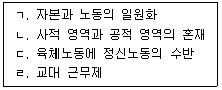
- ㄱ, ㄴ, ㄷ
- ㄱ, ㄷ, ㄹ
- ㄴ, ㄷ, ㄹ
- ㄱ, ㄴ, ㄷ, ㄹ
(정답률: 알수없음)
77. 성인 심정지 환자에게 시행하는 가슴압박의 적절한 속도와 깊이는?
- 분당 60~79회, 약 3cm
- 분당 80~99회, 약 4cm
- 분당 100~120회, 약 5cm
- 분당 140회 이상, 약 6cm
(정답률: 알수없음)
78. 농촌 소각장에서 폐비닐이나 전선, PVC를 태울 때 발생하는 물질로 인체에 독성이 강한 것은?
- 불산
- 다이옥신
- 에탄올
- 황산화물
(정답률: 알수없음)
79. 폭염 발생시 농작업자의 온열질환을 예방하기 위한 방버으로 옳은 것은?
- 휴게실을 설치하고 적정습도 80%를 유지한다.
- 낮 시간은 모자, 그늘 막을 활용한다면 문제없다.
- 가장 더운 낮 시간에는 작업을 중단한다.
- 작업할 때에는 복사열을 방지하기 위해 시설물의 천장을 개방한다.
(정답률: 알수없음)
80. 추위로 인한 건강장해를 예방하는 방법으로 거리가 가장 먼 것은?
- 작업은 되도록 새벽시간에 할 것을 권장한다.
- 체온 유지를 위해 수시로 따뜻한 물 또는 음료를 섭취한다.
- 체온 유지를 위해 얇은 옷을 여러 겹 겹쳐 입도록 한다.
- 작업자가 일하는 장소 가까운 곳에 휴게실을 마련하고 환기가 잘되는 장소에 난로를 설치한다.
(정답률: 알수없음)